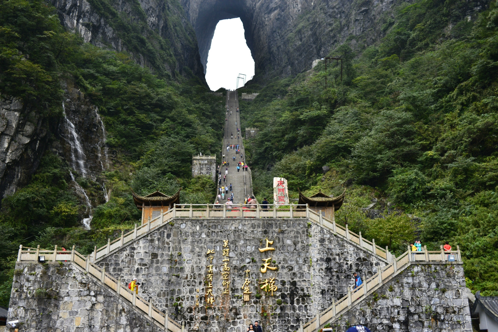
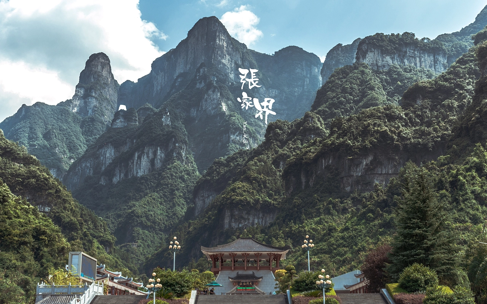
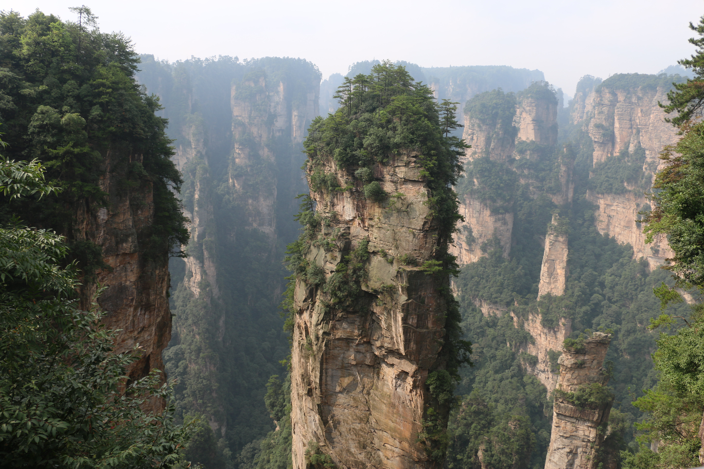
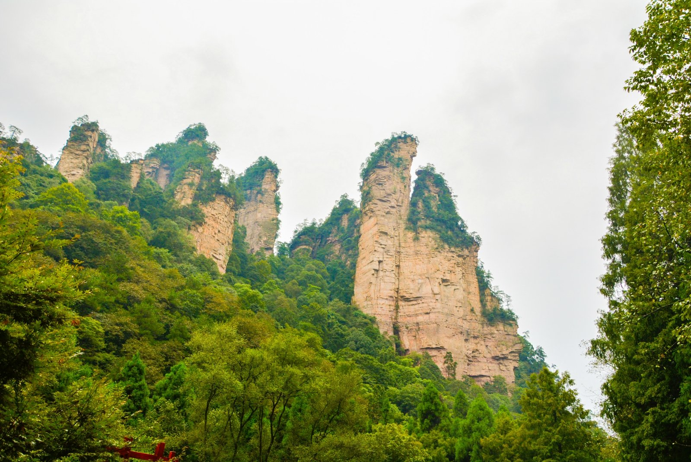
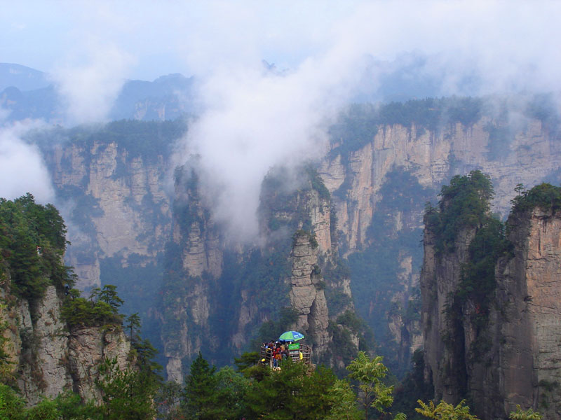
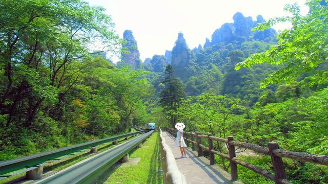
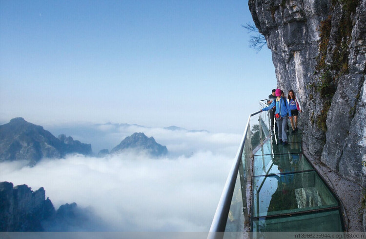
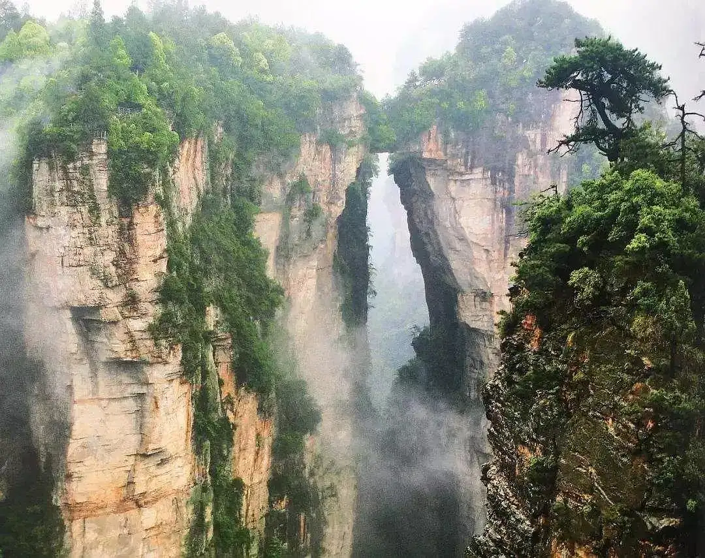
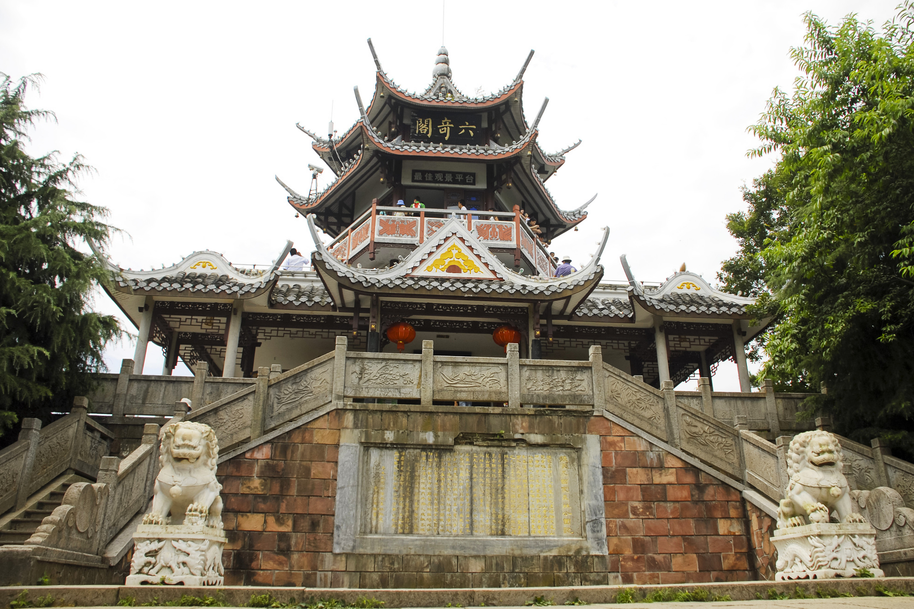
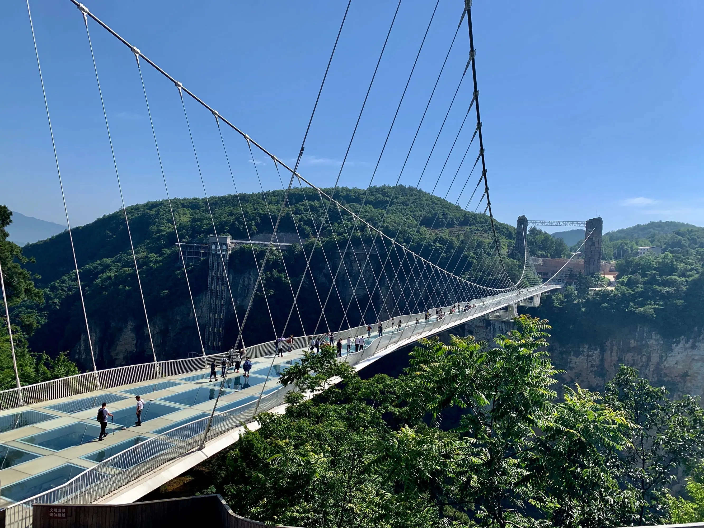

旅游达人 |
上个月刚从张家界旅游回来，分享一下我亲身经历。如果能抽出几分钟耐心看完我这篇攻略，一定会让你去张家界旅游少走弯路!
去张家界是很多朋友旅游度假的首选城市，作为度假天堂的它，航线多、物价低、美食赞、看美景…优点多到你数不过来，而且全程消费也不高，经济实惠，是大部分游客理想的度假目的地。
我们一家人从新加坡乘坐张家界航空，直飞张家界荷花机场，机票非常便宜，飞机到达张家界，当地导游洋洋安排的包车已经在机场等候，我们愉快的开启了张家界度假模式。
这几年疫情很少出去旅游了，把人也憋疯了，现在防疫政策放宽了，取消了防疫管控，大大方便了我们的出行。 最近想去张家界玩的朋友我真心推荐加下洋洋微信，可以提前咨询下，让她给免费规划下，可以给到许多有用的建议。洋洋的微信： wu1122t
一、去张家界最佳旅游方式：自由行。
现在去张家界自由行的人越来越多，也是目前主流旅游方式。
因为考虑到父母的身体，不太适合走太赶的旅游团，我们一家人选择了包车自由行，对比了下跟团游的费用，没什么太大的价格差距，我们果断选择包车，方便我们出行。
包车自由行出行灵活，没有各种限制，可以更好的融入到当地生活中，全方位了解本地人的文化，深入体验异国风情，这样的旅行才是我们想要的旅行，所以建议大家去张家界旅游选择自由行。
二、关于张家界旅游防疫政策要求：
张家界目前已经取消所有防疫限制，大家不用担心被隔离。
三、关于张家界景点：
别看张家界地方不怎么大，但是景点绝对是不少的，像是国家森林公园、天门山、黄龙洞、宝峰湖、大峡谷等等，如果没有专业人士的仔细规划，一趟是绝对看不完张家界的所有景点的。

四、关于张家界旅游省钱攻略：
出去旅行要想省钱，还是要找当地的旅游公司或者当地向导，这才能做到真正意义上的省钱，我在当地旅游公司询价，给到的价格都比在张家界当地找的旅游公司价格高很多，甚至高出一半的价格。
当地给到的参考旅游路线没有什么特色，班期也是固定的，还要在他们指定的时间出行，但是我的假期时间不允许。
后来才知道，不管哪里报团，其他地区的旅行社最终还是交个张家界当地旅游公司负责安排，所以要想省钱，还是要避开中间商找张家界当地旅游公司，来的比较直接，一对一沟通方便了很多，路线设计更加灵活有特色。
后来经朋友推荐，找了网上口碑比较好的的张家界华人向导洋洋，委托她来安排我们这次的张家界之行。有打算去张家界的朋友可以加下洋洋的微信，帮你订制一条合理的线路， 这样不但有当地导游带着玩而且很省钱，也省得倒处去找攻略了！洋洋微信号： wu1122t
度假比较圆满：全程住宿舒适，旅行安排设计合理比较轻松，还给出了很多自由活动的时间，让我们有充足的时间多逛一下。
去张家界旅游，建议找一个当地的中国导游陪同，这样会超级省心，并且还能体会更多的旅游乐趣。

五、张家界旅游线路的设计和推荐：
个人认为去张家界旅游必须找对人，才能花钱少，玩的丰富多彩。
洋洋为我们安排的张家界经典5日游
第1天：抵达张家界，入住酒店休息
第2天：张家界森林公园－大氧吧广场、黄石寨，六奇阁，五指锋，摘星台杨家界，袁家界、阿凡达、悬浮山，天下第一桥，迷魂台，神龟问天，连心桥，情人谷，中韩友谊亭
第3天：张家界森林公园－金鞭溪－贺龙公园、水绕四门，十里画廊、食指锋，向王观书，天狗望月，采药老人，三姐妹峰
第4天：天门山景区，包含最长亚洲客运索道、玻璃栈道、鬼谷洞，鬼谷栈道，99道公路奇观，999级天梯，天门山寺，天门洞，李娜别墅（晚上住凤凰古城）
第5天：游玩凤凰古城，苗家姑娘别具特色的山歌，沿途参观两岸已有百年历史的土家吊脚楼

六、张家界旅行精彩分享：
森林公园-天然氧吧
张家界核心景区的空气是张家界最珍贵的特产，也是世界自然遗产地最宝贵的旅游资源，这里的空气含负氧离子非常高，是世界上最纯正的空气。大氧吧广场每立方厘米空气中含8-10万个负氧离子以上，游人们纷纷拿起相机，邀山峰为伴，拍照留念，也有的游客干脆微闭上双目，努力深呼吸着，清心爽肺，体验最纯正的空气所带来的快感。

摘星台-危楼高百尺，手可摘星辰。
摘星台位于张家界国家森林公园内黄石寨顶东头，是黄石寨好的观景台。从寨顶伸出一道约100米的山梁，山梁尽头那由两块砂岩相叠构成的一座观景台即是摘星台。摘星台面积很小，此处俯瞰山下景观，沟壑幽深，各处景色一览无余。头上白云飘拂，脚下幽谷翠峰，雨天云雾弥漫，周边峰顶无穷变幻。远处的石峰若隐若现，抬头天空近在眼前，仿佛伸手就能摘到天上的星星。

乾坤柱-现实中的“阿凡达”
乾坤柱为张家界“三千奇峰”中的一座，位于世界自然遗产武陵源风景名胜区袁家界景区南端，海拔高度1074米，垂直高度约150米，顶部植被郁郁葱葱，峰体造型奇特，垂直节理切割明显，仿若刀劈斧削般巍巍屹立于张家界，有顶天立地之势，故名乾坤柱。在阿凡达取景后，更名为“哈利路亚山”。
十里画廊-诗情画意惹人醉
十里画廊的长度，官方数据是5.8千米（11.6里）长，不过个人感觉并没有那么长。走在栈道里，呼吸着新鲜的空气，欣赏着峡谷两边造型各异的山峰，根据它们的名字去想象、去观察着它们的形态。目之所及，皆是葱郁的林木，还有不知名的小野花。偶尔还能听到几声鸟鸣。真的颇有几分“人游山峡里，宛如画图中”的味道。步行栈道外，小火车从轨道缓缓驶过，也俨然成了流动的风景线了。

玻璃栈道
张家界天门山玻璃栈道长60米，最高处海拔1430米，这条看着就让人腿软的玻璃栈道给人带来的刺激震撼，可与举世闻名的美国大峡谷玻璃走廊“天空之路”媲美

999天梯
天梯前的天门祭坛，乃信徒必拜之所。据说天门山有通天灵气，虔诚的人们在这里净手燃起象征酸甜苦辣咸的“人间五味草”（即信香），便能架设起连接天界和凡间的天人感应之桥梁，敬献自己的一片真诚之心，求得富贵平安。 天梯左右两侧有“有余”“琴瑟”“长生”“青云”和“如意”五个休息祈福平台，分别代表着财、喜、寿、禄、福；而天梯的五缓坡、四陡坡，则恰扣合九九八十一难，意味人生需要突破无数困难险阻，方能功业圆满。
天门山寺
天门山寺位于天门山国家森林公园内，是天门山景区三个主要的游览景点之一。该寺始建于唐朝，是湘西地区的佛教中心。天门山寺为三进两殿，殿后有观音堂，气势浩大。庙门上高书“天门仙山”，两边楹联为“天外有天天不夜，山上无山山独尊”，现已不存，只留有部分遗迹。
天下第一桥
您看，两座山峰被一条长廊连在一起，形成天然桥洞，平时吞云吐雾,气势壮观雄奇.桥面宽约两米，长20余米，绝对高度350米。桥上苍松挺拔，桥边古藤垂挂，桥下深不可测。走在桥上，只见雾气蒸腾，松涛呼啸，石桥好像也颤颤悠悠，晃晃摇摇似的，令人惊心动魂。这里是张家界风景一绝，是大自然的一个奇迹。

六奇阁
六奇阁是一幢塔状的楼台，座落在黄石寨的最高处。它是自然景观群体唯一的一处人文景观，突兀在石砌的方台基上。湘潭大学教授羊春秋老先生于此撰联曰：名动全球，到此真堪三击节；势拔五岳，归来不用再看山。

凤凰古城
凤凰古城，说名字就让人心生向往。就像一颗明珠镶嵌在湘西的山水间，吸引着四面八方的游人来一睹芳容。城内石板铺成的街道纵横交错，一条沱江横穿凤凰古城，依江而建的吊脚楼错落有致。一幢幢青瓦木楼，一户挨一户的小商铺。这一切仿佛都在诉说着过往的故事。
张家界夜生活
张家界的夜生活不容错过，土家三下锅，张家界SPA按摩，土家摆手舞表演。张家界有一家很有名的富正毅三下锅店，张家界人自己都去，位置经常爆满，里面全部是当天的鲜货，现做味道非常鲜美，大饱口福，洋洋提前帮我们预定好，让我们幸福满满啊。
七、关于其他旅游线路选择和建议
方案一：张家界森林公园+玻璃桥+ 天门山（玻璃栈道）三日游。初次去张家界如果您的时间有限，可以考虑走张家界森林公园+玻璃桥+ 天门山（玻璃栈道）三日游线路，只需要三天时间，当地重点景区都是可以体验到的。
方案二：天门山+森林公园+大峡谷+土司王宫+凤凰古城线路。如果去了张家界的各大景区还没看够，时间还算充足，可以再去一下凤凰选择体验湘西风情，再加1到2天时间。可以选择去芙蓉镇，矮寨大桥等，最后返程张家界结束愉快的湘西之旅。
方案三：武陵源线路。大多人去武陵源基本是二刷了，都是第二次去张家界选择的目的地，看看宝峰湖、听听阿妹阿哥唱山歌。
还有很多好玩的地方我就不逐个列举了，大家可以留言评论一起讨论。
此次去张家界旅游，我必须感谢一下当地做旅行服务的洋洋，为我们提供了很大的帮助,细心热情的服务，让全程旅行不用操太多的心，保证了我们度假圆满结束。
可以给一下华人 洋洋 的联系方式吗？最近我们也计划去张家界玩一下。
洋洋 的微信号 wu1122t 复制搜索添加就行了。
微信已加，比网上查询旅游攻略方便了很多，谢谢分享。

我之前去张家界的时候找的就是向导洋洋，高端定制游，花钱还不多。
咨询的时候就给我留下了很好的印象，到达张家界后，细节方面，都会有负责人嘱咐，在国外旅游，有个华人导游照顾真的是很省心，很温暖，一次旅行让你感受到很多种不同的体验和收货。
谢谢你们有用的推荐，参加 洋洋 的团已经回家了，品质过硬，服务到位!
非常感谢洋洋给我们全家人提供的优质服务，陪伴家人、孩子出来旅游一趟，机会非常难得，张家界休闲度假真值得一去。
我们采纳了洋洋的建议：小车团自由行，一家人单独一台车，私密性强，疫情期间还非常安全。
对比了多个商家，最终选择了洋洋。对于这次张家界的旅行充满着期待，到了最后也没有让我失望，非常愉快的一次张家界之旅。
此次张家界旅行给我的感觉一切都是那么的舒服，松弛有度的行程。因为第一次去张家界旅行，出发前的准备工作开始不是很清楚，洋洋在前期给了我们很多指导和帮助，让我们顺利来到张家界。
游览天然氧吧，感受最真实的大自然美景，然后直奔天门山，去了险峻的玻璃栈道，仿佛整个人飘在空中，踩在云朵上，搭配上不时传来的鸟叫声，宛如置身于仙境中，美不胜收，一定要做好防晒!第五天还去了凤凰古城，张家界旅行真心不错。
行程安排的很满很充实，让我们享受了非常欢乐、非常尽兴的旅行体验，酒店安排的非常好，体验了各种美食。去土家吊脚楼，见识了独属于土家族人的建筑，建筑技术美与艺术美结合的古朴典范。不但充分满足了人们物质文化生活的需要，而且也满足了人们精神文化生活的需求。洋洋考虑的周到，还提前给我们订好了当地有名的餐厅。让我们也体验了一次有管家的感觉
晚上去到了七十二奇楼，人山人海，美不胜收。
可以多分享一些张家界旅游攻略吗?计划12月去天门山看雪。
详细的张家界旅游攻略，我建议还是联系向导洋洋，我也是找人家安排的，毕竟人家专业，能给到你详细的旅游规划和报价，这样来的比较直接一些。
洋洋 的微信 wu1122t
我们是自己挑选制定的旅游线路，出行之前的准备工作基本不用管，只要带好行李和自己就好了，落地接送很方便，需要的材料洋洋告诉的很全面，从落地到方程都很顺利，天门山和森林公园极力推荐，因为同事之前去的武陵源所以推荐我们去的宝峰湖，宝峰湖风景优美而且游客不是很多，旅游体验比较好!
一定要去听一次阿哥阿妹唱的山歌，湖水也很清澈，可以看到好多鱼在周围游，触手可及!
吃上了洋洋安排的富正毅三下锅，还看了天门狐仙，真心不错。
此次张家界之旅，和新婚老公一起来的，也算是蜜月游，张家界很适合散散心，很放松自己心情，酒店安排的很棒。
到达张家界就开启度假模式啦，天门山、森林公园、武陵源、大峡谷，看山，看水，还体验了当地的民俗风情，很愉快的一次度假。
大峡谷玻璃桥，还有一个美丽的名字——云天渡，前段时间就因“你背我过去，我就嫁给你”这句话红遍网络。“云天渡”寓意着天桥合一，以渡天下之人。在云雾之间，整座玻璃桥仿佛千尺白绫一般若隐若现，一踏上玻璃桥桥面，便从山水之中突然超脱山水之外，“渡”，既是将游客渡过峡谷，又是将同行之人的心渡得更加接近。沙美岛大家不要错过，真心美翻了。和老公一起体验了洋洋安排的富正毅三下锅，真心不错。
想去张家界度假的可以找洋洋。

我是带着爸妈和爷爷去的，跟洋洋报的自由行团。因考虑到老人的身体，不敢把行程填太满和太赶，所以这次报的这个团行程比较慢，全程都比较轻松。
线路设计非常合理，爷爷一点感觉不到累，很符合中老年人出行，吃住方面都非常好。
找个张家界当地的负责人为你设计路线，真的是很接地气。
洋洋 的微信号 wu1122t